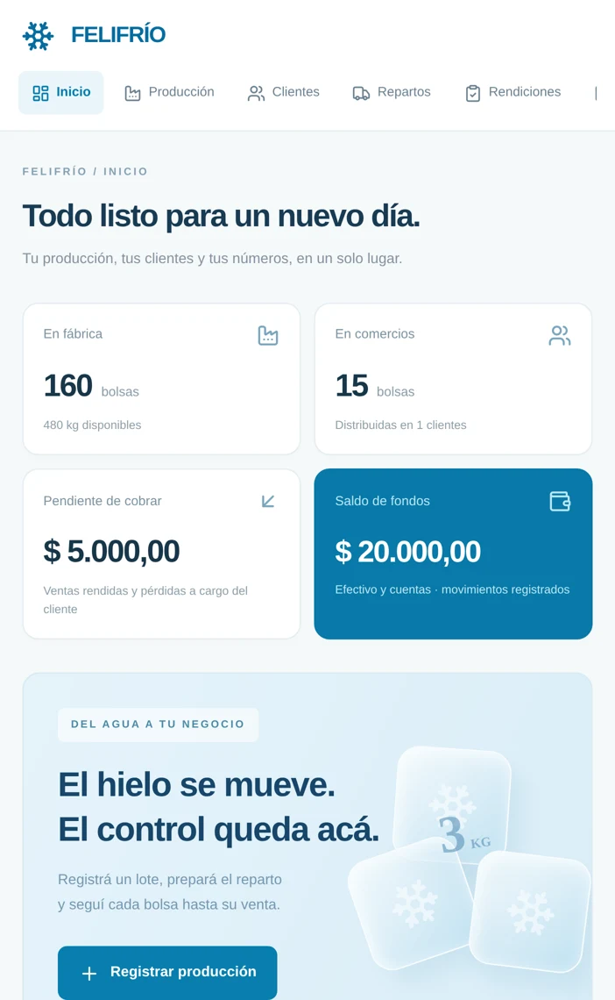

Producís
Registrás un lote y sabés cuántas bolsas tenés listas en fábrica.
PENSADA PARA EL NEGOCIO DEL HIELO
De la fábrica al comercio, cada bolsa cuenta. Organizá tu producción, tus repartos y tus cobros en un solo lugar.

01 / DEL AGUA A TU NEGOCIO
Tu negocio tiene su propio ritmo.
Felifrío sigue el recorrido de cada bolsa, desde que la producís hasta que la cobrás.
Registrás un lote y sabés cuántas bolsas tenés listas en fábrica.
Cargás el vehículo y dejás las bolsas en cada comercio, en consignación.
En la siguiente visita, contás lo que quedó. La app calcula lo vendido.
Anotás el pago, total o parcial, y ves cuánto queda pendiente.
02 / TOCÁ. PROBÁ. ENTENDÉ.
Recorré un ejemplo de una visita al almacén.
Seleccioná cada paso y mirá cómo cambian los números.
SALIDA A REPARTO
Producís 200 bolsas y cargás 40 en el vehículo. En fábrica quedan 160.
Sabés qué quedó en fábrica y qué salió a reparto.
Simulación con datos ficticios. No registra operaciones en la app.
03 / UNA MIRADA. TODO MÁS CLARO.
Stock en fábrica y comercios, deuda pendiente y saldo de fondos. Los números del negocio, juntos.
La entrega mueve stock. La rendición registra la venta. El cobro registra el ingreso. Cada cosa, en su momento.
Consultá saldos por cliente, registrá pagos parciales y organizá las tareas de tu próxima visita.
Pérdidas y retiros
Compras y gastos
Agenda de tareas
Historial de movimientos
04 / MIRALA EN ACCIÓN
Un recorrido de 65 segundos por Felifrío.
De la primera bolsa al último cobro.
LO QUE QUERÉS SABER
Para una fábrica de hielo que produce bolsas de 3 kg y reparte en consignación. La versión actual contempla un vehículo y permite organizar producción, clientes, entregas, rendiciones y cobros.
No. La entrega mueve las bolsas al comercio. En la siguiente visita, el recuento permite calcular lo vendido y generar la deuda. Las pérdidas se registran por separado.
Sí. Podés registrar una parte del pago y consultar el saldo pendiente del cliente. El saldo de fondos reúne los movimientos de efectivo y cuentas; no representa la ganancia.
No. Esta web muestra un ejemplo independiente con datos ficticios. El acceso a la aplicación de gestión se configura por separado.
FELIFRÍO · GESTIÓN